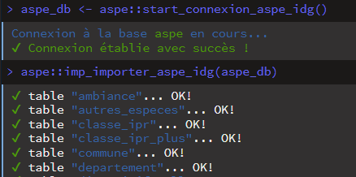

1b. Importation des tables de la base ASPE depuis l'IDG (OFB)
Benoit Richard, Pascal Irz
05/11/2025
Source:vignettes/aspe_01b_importation_tables_idg.Rmd
aspe_01b_importation_tables_idg.RmdObjectif
Récemment (depuis octobre 2025), la base ASPE est présente dans l’IDG de l’OFB (= Infrastructure de Données Géographiques).
Il est donc maintenant possible d’importer directement les tables de la base ASPE depuis l’IDG (sans passer par la conversion d’un dump ASPE ; cf. vignette importation tables ).
A noter que cet accès via l’IDG :
- est restreint aux agents de l’OFB, ayant préalablement été inscrits comme utilisateurs ;
- se fait à partir du réseau interne de l’OFB (ou via le VPN à l’externe) ;
- nécessite de disposer des paramètres de connexion à la base IDG (adresse, login, …).
Les tables importées sont sous la forme de dataframes,
et sont directement utilisables depuis l’IDE utilisé (comme
RStudio), et sont compatibles avec les autres fonctions du
package aspe.
Installer et charger le package {aspe}
Charger le package aspe, téléchargeable depuis GitHub :
install.packages("devtools")
devtools::install_github("pascalirz/aspe")Eventuellement cette commande vous retournera un message demandant de
mettre à jour des packages. Acceptez au moins les mises à
jour depuis le CRAN.
… et des autres qui sont nécessaires pour exécuter les scripts.
Stocker les informations de connexion dans son R environnement
Pour des raisons de sécurité (et de bonnes pratiques), il
convient de ne pas exposer les informations sensibles de connexion à
tous. C’est pourquoi, il est conseillé de stocker ces informations dans
l’environnement R (fichier .Renviron) sur son
ordinateur. La fonction de connexion à la base aspe via l’IDG utilise
ces informations (càd. nommées ainsi).
Pour stocker les informations dans votre environnement
R, vous pouvez procéder comme ceci :
## 1° - ouvrir le fichier de configuration de l'environnement R avec la fonction du package usethis (installer le package si nécessaire).
usethis::edit_r_environ()
## 2° - dans la fenêtre ouverte intitulée '.Renviron',
# sauvegarder les lignes suivantes avec le bon paramétrage
BDD_IDG_HOST = "URL_DE_LA_BDD"
BDD_IDG_LOGIN = "IDENTIFIANT_POUR_CONNEXION_A_LA_BDD"
BDD_IDG_PWD = "MDP_POUR_CONNEXION_A_LA_BDD"
BDD_IDG_PORT = "LE_PORT_DE_LA_BDD"
BDD_IDG_ASPE_NAME = 'NOM_DE_LA_BDD'Sauvegarder le fichier .Renviron et redémarrer votre
session R pour que les informations renseignées soient
utilisables.
Au redémarrage, vérifier les informations stockées en tapant ces lignes suivantes :
## 3° - ces informations doivent être visibles dans la console R :
Sys.getenv('BDD_IDG_HOST')
Sys.getenv('BDD_IDG_LOGIN')
Sys.getenv('BDD_IDG_PWD')
Sys.getenv('BDD_IDG_PORT')
Sys.getenv('BDD_IDG_ASPE_NAME')Importation de la base depuis l’IDG
Après ces réglages, vous êtes prêts à utiliser les fonctions d’importation aspe liées à l’IDG 🤩.
En pratique, il faut d’abord (i) se connecter à la base de l’IDG, puis (ii) lancer l’importation.
Deux fonctions facilitent le processus :
# connexion à l'IDG
# ! veillez à disposer des informations de connexion et un droit d'accès
aspe_db <- imp_connecter_aspe_idg()
# importation des tables de la base aspe
imp_importer_aspe_idg(aspe_db)Chaque table est importée une par une. L’opération est assez rapide selon l’état de votre connexion (de l’ordre de 3 à 5 min 🚀).

A noter qu’il est possible de choisir d’inclure ou d’exclure certaines tables lors de l’importation, en utilisant les arguments
tab_selectettab_excldans la fonctionimp_importer_aspe_idg(). Par exemple, si l’on souhaite importer uniquement la table des opérations, il suffit d’écrire:imp_importer_aspe_idg(aspe_db, tab_select = "operation")
Quand l’importation est terminée, une centaine de tables au format
dataframe apparaissent dans l’onglet “Environnement” de
RStudio.
Pour éviter d’avoir à répéter cet import, on peut en sauvegarder le
résultat au format .RData de façon à accéder plus
rapidement aux données par la suite. La fonction
export_tables_rdata() peut être utilisée pour cela.
Elle nomme les fichiers (tables_sauf_mei et
mesure_individuelle) en fonction des dates et heures
systèmes (pour éviter d’écraser malencontreusement d’anciens fichiers)
et les sauvegarde par défaut dans un sous-répertoire
/processed_data du répertoire de travail. Si celui-ci n’est
pas pré-existant, il est créé.
NB: Il est possible de scinder les tables
mesure_individuelleen plusieurs parties afin de faciliter le dépôt sur des espaces de stockage (avec taille limité). Par exemple, pour créer 2 parties, la fonction s’utilise comme ceci:export_tables_rdata(n_fichiers_mei = 2).